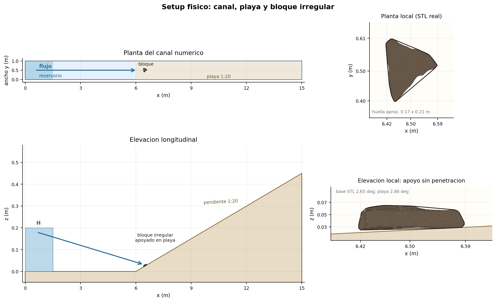
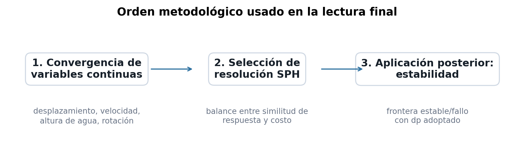
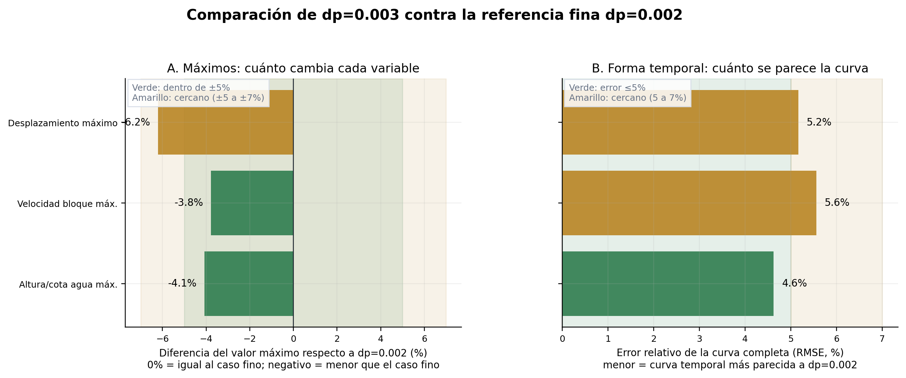
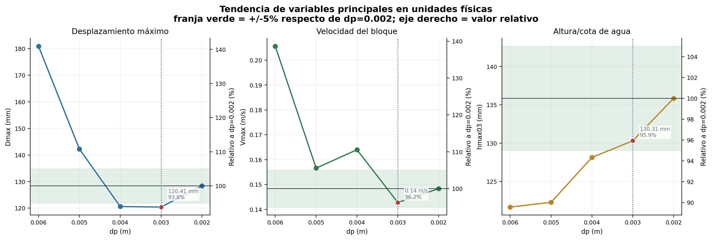
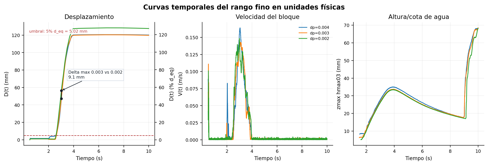
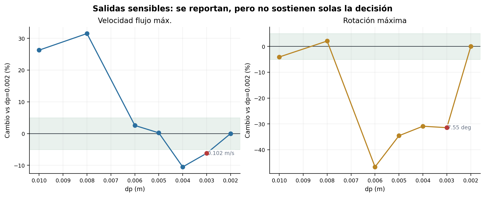
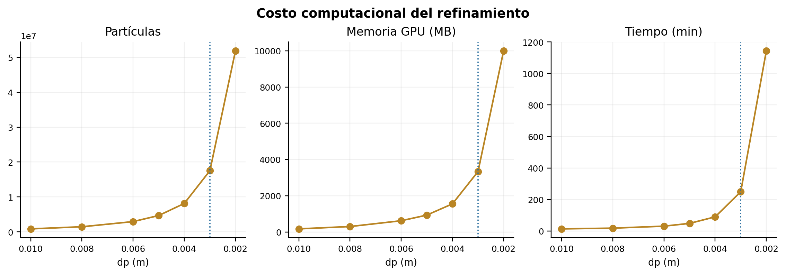
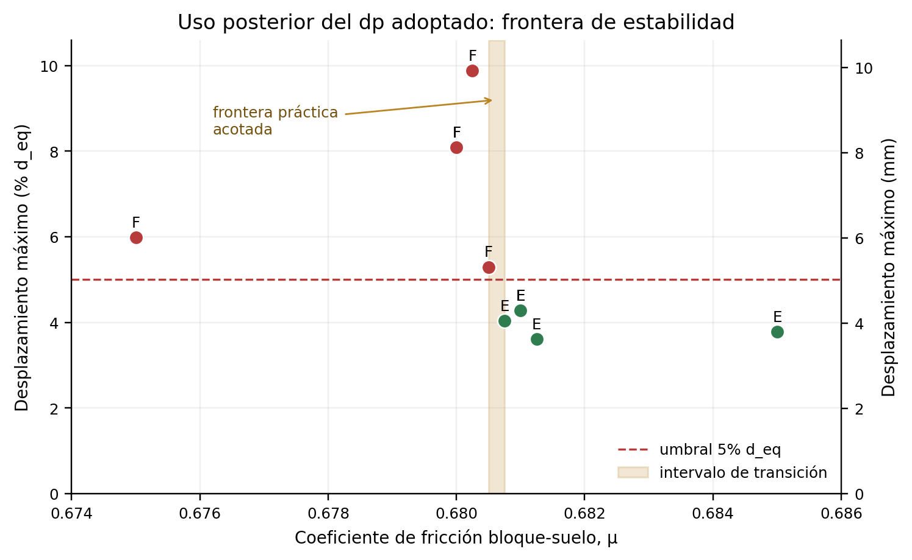
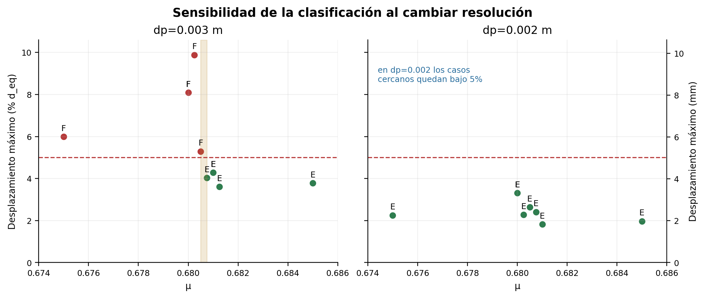

SPH y benchmark hidraulico
Los testcases oficiales de DualSPHysics y los benchmarks SPHERIC justifican usar casos dam-break como verificacion hidraulica del solver y del postproceso. En esta pagina se usa para validar el entorno, no el bloque.
Esta pagina resume por que se adopta dp=0.003 m como resolucion operativa. La produccion dirigida y active learning quedan en una pagina separada.

models/BLIR3.stl con escala 0.04 y rotacion registrada del caso; los contornos auditables quedan en data/stl_boulder_outline_*.csv. La elevacion global realza z para legibilidad; el detalle muestra el apoyo local sin penetracion.Todos los valores de la tabla por resolución corresponden a este mismo caso físico; lo único que cambia entre filas es dp.
| Fuente auditada | data/logs/conv3_f05_full.log |
|---|---|
| Serie | conv3_f05_full |
| Altura de presa / columna inicial | 0.20 m |
| Masa del bloque | 1.00 kg |
| Coeficiente de fricción bloque-playa | mu = 0.50 |
| Pendiente de playa | 1:20 |
| Rotación adicional del bloque | rot_z = 0.0 deg |
| Rotación STL registrada | (0.0, 0.0, 0.0) deg |
| Posición inicial nominal | (x, y, z) = (6.5, 0.5, 0.025) m |
| Bloque | BLIR3.stl, escala = 0.04 |
| Volumen / densidad | 0.00053023 m3 / 1886.0 kg/m3 |
| Diámetro equivalente | d_eq = 0.100421 m |
| Bbox bloque | 0.1710 x 0.2100 x 0.0399 m |
| Canal | L_flat=6.0 m, L_ramp=9.0 m, L_end=15.0 m, W=1.0 m, H=1.5 m |
| Gauges | 12 velocity + 8 maxZ, reubicados según posición del bloque |
| Resoluciones barridas | dp = 0.010, 0.008, 0.006, 0.005, 0.004, 0.003, 0.002 m |
Ficha reconstruida desde data/logs/conv3_f05_full.log. Esta es la condición específica usada para la convergencia continua; no representa todos los casos productivos posteriores.
SPH no usa una malla fija; usa partículas. Por eso aquí dp significa espaciamiento inicial entre partículas y se interpreta como resolución espacial del modelo.
El análisis se ordena así: primero se comparan variables continuas para distintos dp, como desplazamiento del bloque, velocidad del bloque, velocidad del flujo y altura de agua en gauges. Esa es la parte de convergencia o sensibilidad de resolución.
Luego, con una resolución seleccionada por equilibrio entre respuesta y costo, se analiza si el bloque inicia movimiento bajo un criterio operacional. Esa segunda parte es el estudio de estabilidad, no el reemplazo del análisis de convergencia.
En un estudio CFD ideal, al refinar la discretización las variables deberían acercarse a un valor asintótico. Con tres o más resoluciones se puede estimar orden de convergencia, extrapolación de Richardson y una banda tipo GCI. Ese enfoque es el marco de referencia correcto.
En este caso se adapta a SPH usando dp como escala de resolución. Sin embargo, la clasificación estable/fallo no es una variable suave: depende de contacto, superficie libre y un umbral de desplazamiento. Por eso la convergencia se evalúa primero sobre variables continuas, no sobre la clase final.

La lectura de convergencia se concentró en variables continuas, antes de clasificar estabilidad. Para defender dp=0.003 m no se usan todas las salidas con el mismo peso: se priorizan las que describen el movimiento principal del bloque y el forzante hidráulico.
El caso dp=0.002 m se usa como referencia fina. La lectura no es que la convergencia sea perfecta: en dp=0.003 m, la altura/cota de agua y la velocidad máxima del bloque quedan dentro o muy cerca de una banda de 5%, mientras que el desplazamiento máximo queda levemente fuera, con una diferencia cercana a 6%. Esta evidencia sostiene una estabilización práctica de las variables principales, suficiente para adoptar una resolución operativa con cautela.

dp=0.003 m comparadas con dp=0.002 m. Cada diferencia porcentual incluye su diferencia absoluta: mm para desplazamiento/altura y m/s para velocidad.dp=0.002 m; las etiquetas agregan la diferencia absoluta.Esta tabla responde la pregunta práctica: cuánto cambia cada resolución respecto del caso fino dp=0.002 m, y cuánto cuesta obtenerla.
| dp (m) | Sim | Dmax (mm) | Dmax (% d_eq) | Delta Dmax vs 0.002 | V bloque max (m/s) | h agua max | U flujo max (m/s) | Rot. acum. max (deg) | Costo | Lectura |
|---|---|---|---|---|---|---|---|---|---|---|
| 0.010 | OK | 384.46 | 382.8% | +256.09 mm (+199.5%) | 0.427 | 122.6 mm | 2.07 | 23.04 | 0.87 M 0.2 GB · 13.3 min | Gruesa: sobreestima el movimiento |
| 0.008 | OK | 393.27 | 391.6% | +264.90 mm (+206.4%) | 0.394 | 125.6 mm | 2.15 | 24.53 | 1.47 M 0.3 GB · 17.8 min | Gruesa: sobreestima el movimiento |
| 0.006 | OK | 180.91 | 180.1% | +52.54 mm (+40.9%) | 0.206 | 121.7 mm | 1.68 | 12.82 | 2.95 M 0.6 GB · 30.4 min | Transición: aún cambia bastante |
| 0.005 | OK | 142.26 | 141.7% | +13.89 mm (+10.8%) | 0.157 | 122.3 mm | 1.64 | 15.72 | 4.69 M 0.9 GB · 48.1 min | Transición: aún cambia bastante |
| 0.004 | OK | 120.60 | 120.1% | -7.77 mm (-6.1%) | 0.164 | 128.1 mm | 1.46 | 16.61 | 8.15 M 1.5 GB · 89.5 min | Rango fino: respuesta estabilizada |
| 0.003 | OK | 120.41 | 119.9% | -7.96 mm (-6.2%) | 0.143 | 130.3 mm | 1.53 | 16.47 | 17.53 M 3.3 GB · 249.2 min | Adoptada: cercana al fino y 4.6x más rápida |
| 0.002 | OK | 128.37 | 127.8% | referencia | 0.148 | 135.9 mm | 1.64 | 24.02 | 51.86 M 9.8 GB · 1144.2 min | Referencia fina |
Tabla derivada de data/results/conv3_f05_full.csv. Delta Dmax se calcula contra el caso fino dp=0.002 m; valores negativos significan menor desplazamiento máximo que la referencia fina.

dp=0.002 m.
No todas las salidas tienen el mismo nivel de cierre. La velocidad de flujo puntual en un gauge y la rotación acumulada del bloque son más sensibles al refinamiento. Por eso se muestran como límite del análisis, pero no se usan como base principal para fijar dp ni para clasificar el movimiento.


dp, pero aumenta fuertemente partículas, memoria y tiempo. El caso dp=0.002 m es útil como referencia fina, pero costoso como resolución productiva.Lectura defendible: dp=0.003 m se adopta porque las variables principales se estabilizan en el rango fino y el costo de dp=0.002 m crece mucho. La conclusión no es “todo converge perfectamente”, sino “la resolución es suficientemente cercana al caso fino para continuar con un análisis productivo conservador, manteniendo controles puntuales a dp=0.002 m”.
Una vez fijado dp=0.003 m, se puede estudiar estabilidad. Aquí frontera significa el intervalo de fricción μ donde, bajo la misma geometría y forzante, el bloque cambia entre no superar y superar el umbral de movimiento.
El umbral usado es D_max > 5% d_eq, donde D_max es el desplazamiento máximo del bloque y d_eq su diámetro equivalente. La rotación se informa aparte como variable observada.

dp=0.003 m, la condición base queda acotada entre μ=0.68050 y μ=0.68075.
dp=0.002 m, los casos cercanos quedan bajo el umbral. Esto se reporta como sensibilidad de resolución de la frontera.Los lotes productivos, el efecto de masa, la hidraulica local, las fuerzas, la rotacion diagnostica y active learning se movieron a una pagina dedicada para no mezclar la seleccion de dp con el analisis posterior.
Sin un experimento fisico propio del bloque, la tesis no debe afirmar validacion experimental directa del caso completo. La defensa se arma por capas: sensibilidad de resolucion, benchmark hidraulico externo, sanity de contacto bloque-suelo y comparacion analitica de orden de magnitud. Cada capa responde una pregunta distinta.
| Capa | Que permite afirmar | Que no permite afirmar | Base de literatura |
|---|---|---|---|
Convergencia/sensibilidad de dp | Las variables continuas principales se estabilizan en el rango fino y dp=0.003 m es una resolucion operativa defendible. | No demuestra convergencia asintotica fuerte de la clase estable/fallo. | Richardson/Roache-GCI y tutorial NASA WIND sobre refinamiento espacial. |
| Benchmark hidraulico | La instalacion local de GenCase/DualSPHysics/GPU/postproceso reproduce un dam-break conocido. | No valida contacto, friccion ni movimiento del bloque irregular. | Testcases oficiales DualSPHysics y benchmarks SPHERIC de dam-break. |
| Sanity de contacto | El bloque no supera el umbral por apoyo inicial, penetracion o contacto numerico sin impacto hidraulico local. | No valida el movimiento bajo tsunami ni coeficientes de friccion reales. | Acoplamiento DualSPHysics-Chrono y documentacion de contacto/cuerpos rigidos. |
| Comparacion analitica | Los casos SPH no contradicen un balance fisico de arrastre, peso, pendiente y friccion a nivel de orden de magnitud. | No reemplaza SPH-Chrono ni predice exactamente desplazamiento/rotacion. | Nott/Nandasena para bloques costeros, experimentos de Bressan, datos moved/unmoved de Iwai & Goto y advertencias de Cox et al. |
Los testcases oficiales de DualSPHysics y los benchmarks SPHERIC justifican usar casos dam-break como verificacion hidraulica del solver y del postproceso. En esta pagina se usa para validar el entorno, no el bloque.
El marco clasico de refinamiento se toma de Richardson/Roache-GCI, resumido por el tutorial de NASA WIND. En SPH se adapta usando dp como escala de resolucion y evaluando variables continuas antes de hablar de estabilidad.
DualSPHysics documenta la integracion con Project Chrono para cuerpos rigidos y contacto. Por eso el chequeo correcto no es otro dam-break, sino comprobar que el bloque no se desplaza por una condicion inicial defectuosa.
Nandasena, Paris & Tanaka plantean balances de fuerzas para inicio de movimiento; Bressan et al. muestran experimentalmente la influencia de profundidad, velocidad, peso, forma y orientacion; Iwai & Goto refuerzan la importancia de casos movidos/no movidos; Cox et al. advierten que esos balances no deben venderse como validacion absoluta. Por eso aqui se usan como coherencia fisica, no como prueba final.
Frase defendible: el modelo fue verificado numericamente por resolucion, contrastado con un benchmark hidraulico externo, revisado con un sanity de contacto y comparado con balances analiticos. No queda validado experimentalmente para este bloque especifico; la frontera final debe reportarse condicionada a dp=0.003 m, geometria fija, criterio displacement_only y parametros de contacto usados.
dp implica mayor resolución y mayor costo computacional.D_max > 5% d_eq.μ donde cambia la respuesta estable/falla para una resolución y condición física dadas.